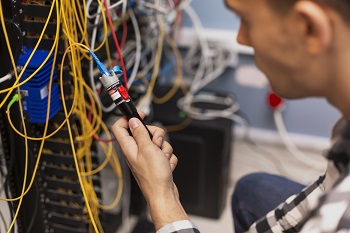
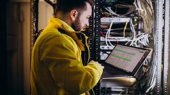
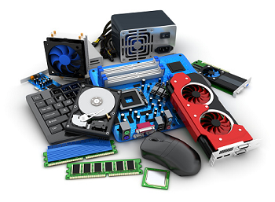

FIBRA OPTICA:
Nos encargamos de toda instalación, mantenimineto y reparación de lineas de Fibra Óptica, ya sean ramales grandes o cables drop de pocas fibras. Administramos cualquier equipo necesario como switchs F.O, media converters, conectores, etc. Fusionamos fibra en cualquier medio, como cajas de distribución FTTH/P, botellas, bandejas multimedia y otros. Ubicamos problemas y cortes en las lineas mediante OTDR y los solucionamos en el acto.

INFRAESTRUCTURA DE REDES:
Investigamos, analizamos y desarrollamos la infraestructura de la red para tu empresa, asegurando conexiones rápidas, seguras y durables. Con equipos de buena calidad y un trabajo ordenado te aseguramos la longeva duración de la instalación y la menor cantidad de problemas, así mismo estamos disponibles para mejoras, mantenimiento y reparaciones lo antes posible.

COMPUTACION:
Somos profesionales en armado, reparacion y update de computadoras. Te indicamos que componentes se adecuan a tus necesidades y presupuesto, también te guiaremos con la información necesaria e instalamos el software que necesites. Solucionamos tus problemas en poco tiempo y actualizamos tus equipos viejos para que sigan funcionando en optimas condiciones.
VIDEOVIGILANCIA:
Conocemos todo sobre la instalacion de sistemas de videovigilancia para tu casa, empresa y más. Ya sea por cableado con DVR, por red con NVR o ambos con XVR. Te proponemos multiples planes en base a tus necesidades asegurandote una completa porteccion y seguridad de la zona.